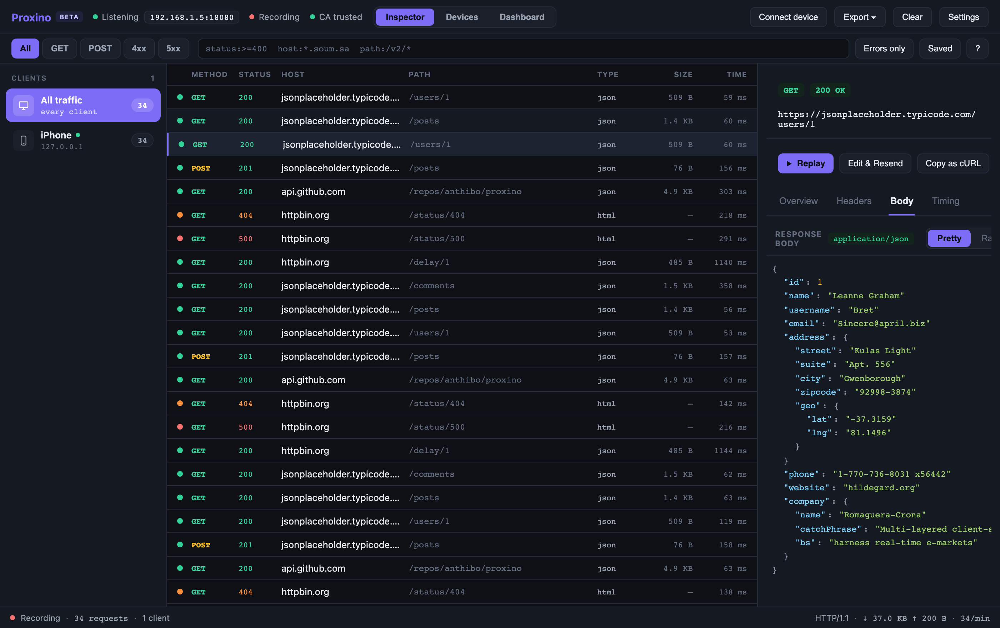

See what your apps are really sending.
Proxino is a free, self-hosted HTTP inspector. Route any app through it, a phone, an emulator, a browser, a script, and watch every request live: decrypted, grouped per client, ready to replay. No account, no license key, nothing leaves your machine.

The questions you actually have when something misbehaves.
Proxino is built around the four things you do in a debugging session: decrypt, find, reproduce, and trust what you are looking at.
Yes, once the client trusts the certificate. The connect wizard shows the proxy address and a scannable QR code for phones; desktop tools only need the CA installed. Certificate-pinned apps won't decrypt, so Proxino forwards them untouched and lists them, instead of breaking the app.
Type status:>=400 host:*.example.com and the table narrows as you type, with autocomplete. Quick chips for GET, POST, 4xx and 5xx, an errors-only toggle, and saved filters for the searches you run every day.
Replay any request, or edit its method, URL, headers or body and resend. Set a breakpoint to pause a matching request or response and rewrite it before it continues. Copy as cURL, export HAR, save the session for tomorrow.
Nowhere. The proxy and the UI run on your computer; the web UI only listens on 127.0.0.1. There is no cloud, no telemetry, and no sign-in. The source is on GitHub if you want to check.
Connected in three steps.
The desktop app starts the capture engine for you. The rest happens on the client.
Same network, then set the device, emulator, browser or tool to use Proxino as its HTTP proxy, port 8080 by default. The Connect wizard shows the exact address.
Scan the QR code or open mitm.it through the proxy and install the CA. On iOS, also enable full trust in Certificate Trust Settings.
Requests appear the moment they start, grouped under the client. Click one for headers, body, and a timing waterfall.

Download Proxino
One download per platform, capture engine built in. Builds are unsigned for now, so your OS will ask once before the first launch.